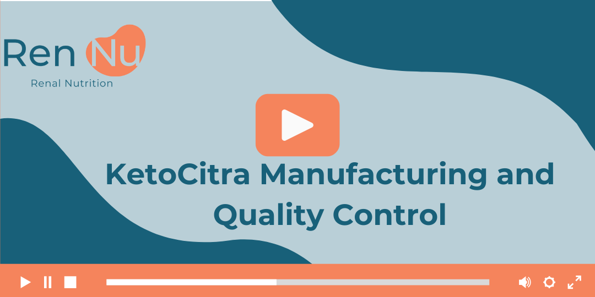

Videos and Webinars
KetoCitra® Manufacturing and Quality Control
What sets KetoCitra® apart from supplements? SBN’s Jacob Kingaard shares that it’s made in a US FDA-registered facility with rigorous sourcing, quality control, and independent 3rd-party testing for every batch, ensuring top-tier safety and compliance.